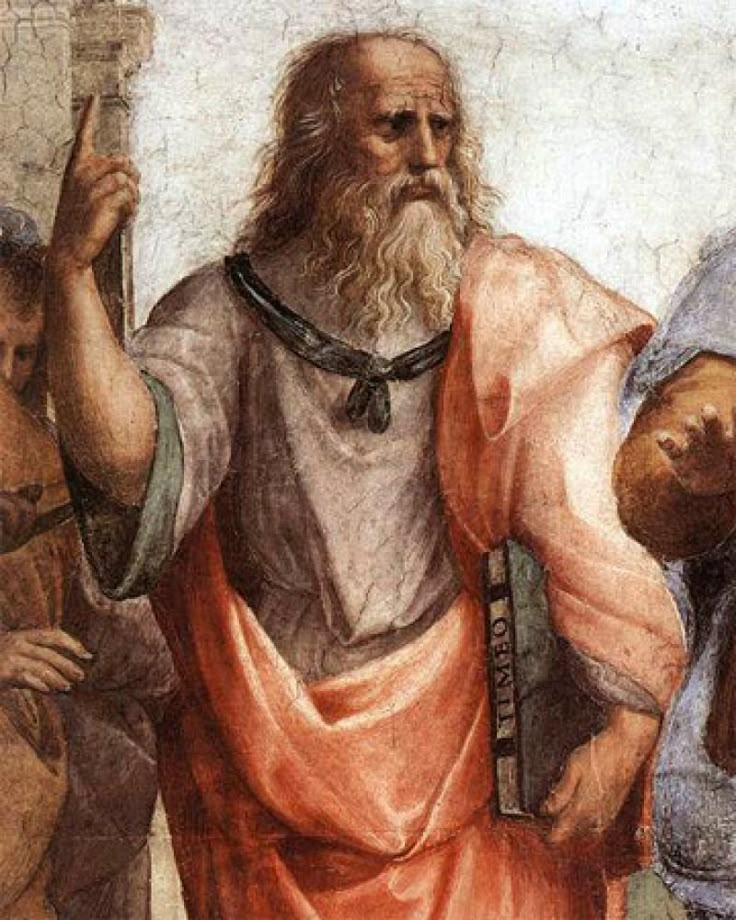

Who Was Plato?
Plato was an ancient Greek philosopher who lived in Athens during the fourth century BCE. Born around 429 BCE and dying around 347 BCE, he became one of the most influential thinkers in the history of Western philosophy. His writings explored fundamental questions concerning knowledge, reality, the soul, virtue, justice, love, education, and political life, and their influence has continued for more than two thousand years.
Plato was closely associated with Socrates, whose execution in 399 BCE profoundly shaped Plato's intellectual life. Socrates appears as the principal speaker in many of Plato's philosophical works, although Plato was not simply recording his teacher's ideas. Over time, his writings developed distinctive philosophical investigations that extended into metaphysics, epistemology, ethics, psychology, and political philosophy.
Nearly all of Plato's philosophical works take the form of dialogues, in which characters question, challenge, and examine one another's beliefs. This literary form reflects the importance he placed on philosophical inquiry as an active process rather than the simple transmission of fixed conclusions. His dialogues often leave readers with difficult problems and invite them to continue the investigation for themselves.
Plato is especially associated with the philosophical idea of Forms, according to which the changing objects encountered through the senses stand in a complex relationship to intelligible and more stable realities. His thought also examines the nature of the soul, the possibility of genuine knowledge, and the relationship between reason, desire, virtue, and the good life. These questions connect the different areas of his philosophy.
He later founded the Academy in Athens, one of the most important institutions of philosophical study in the ancient world, and Aristotle was among those who studied there. Through his own writings and through the philosophical traditions that developed from them, Plato occupies a central position in the history of ancient Greek thought and in the wider development of Western philosophy.
Plato's writings examine some of philosophy's most enduring questions: What is justice? What is knowledge? What is reality? What makes a good life? How should a society be governed? Can education transform the human mind? These questions appear throughout works such as Republic, Apology, Phaedo, Symposium, Meno, and Laws, each of which approaches philosophical inquiry through its own distinctive setting, characters, arguments, and problems.
Plato: Quick Facts
- Name — Plato
- Era — Fourth century BCE
- From — Athens, Greece
- Tradition — Ancient Greek philosophy
- Teacher — Socrates
- Student — Aristotle
- Known for — Theory of Forms, philosophy of knowledge, ethics, political philosophy, metaphysics, and philosophical dialogues
- Famous work — Republic
- School founded — The Academy in Athens
- Writing style — Philosophical dialogues
Plato's Life and Historical Context

Plato lived during one of the most turbulent periods in the history of ancient Athens. Born around 429 BCE, he grew up during the later stages of the Peloponnesian War between Athens and Sparta, a conflict that eventually ended with Athens' defeat in 404 BCE. The years that followed were marked by political instability, including the brief rule of the oligarchic Thirty Tyrants and the subsequent restoration of Athenian democracy.
These political experiences formed an important background to Plato's later reflections on justice, political authority, education, and the weaknesses of existing forms of government. Most significant was the trial and execution of Socrates in 399 BCE, an event that deeply shaped Plato's intellectual world. Plato's later writings repeatedly return to questions raised by the conflict between philosophical inquiry, public opinion, political power, and the demands of justice.
Socrates had a profound influence on Plato, and he appears as the principal speaker in many of Plato's dialogues. Yet the dialogues should not simply be treated as transcripts of conversations held by the historical Socrates. Scholars face the difficult problem of distinguishing Socrates' own views from philosophical positions that Plato may have developed himself while continuing to use Socrates as his central dramatic and intellectual figure.
Plato's philosophy developed within a remarkably active intellectual environment that included debates about nature, knowledge, rhetoric, mathematics, politics, and moral life. His writings began from many of the ethical questions associated with Socrates but expanded far beyond them. Over the course of his philosophical career, Plato investigated metaphysics, epistemology, psychology, education, political theory, mathematics, and the fundamental structure of reality.
Later in his life, Plato founded the Academy in Athens, an institution devoted to philosophical and intellectual study that became one of the most important centers of learning in the ancient Greek world. Aristotle was among those who studied there. Although many details of Plato's personal life remain uncertain, his surviving dialogues provide an extraordinary record of his engagement with the political and intellectual problems of his age and with questions that continued to shape philosophy long after his death.
Why Is Plato Important in Philosophy?
Plato is important because his writings address an unusually wide range of philosophical problems while also helping to define the scope and ambitions of philosophy itself. His dialogues explore ethics, metaphysics, epistemology, political philosophy, education, art, mathematics, psychology, and the nature of philosophical inquiry. Few thinkers in the history of Western philosophy have exercised such a broad and enduring influence across so many different fields.
His influence extends far beyond ancient Greece. Later philosophers repeatedly engaged with Platonic questions concerning reality, knowledge, justice, the soul, and the relationship between the changing world of experience and more stable objects of thought. Platonism became an important intellectual tradition in its own right, while philosophers who disagreed with Plato often defined their own positions through criticism or reinterpretation of Platonic ideas.
Plato also helped establish philosophical dialogue as a powerful literary and intellectual form. Rather than presenting philosophy simply as a collection of propositions or conclusions, his works often develop ideas through questions, arguments, objections, analogies, and responses. The reader is frequently drawn into the process of inquiry and must consider whether the arguments offered by the different speakers are ultimately convincing.
Another source of Plato's importance is the depth with which his different philosophical concerns are connected. Questions about knowledge are related to questions about reality; questions about the soul are connected with ethics and education; and questions about justice in the individual are connected with questions about justice in political communities. This attempt to examine human life and reality as interconnected philosophical problems remains one of the defining features of his thought.
Plato's influence can therefore be seen not only in particular doctrines, such as the Forms, but also in the continuing philosophical problems his works raise. What distinguishes knowledge from opinion? Is there an objective basis for justice and morality? What should education aim to achieve? What is the relationship between appearance and reality? These questions have remained central to philosophical discussion, making Plato an enduring point of reference in the history of Western thought.
What Did Plato Believe?
Plato's philosophy cannot be reduced to a single doctrine or presented as a completely fixed system. His dialogues investigate different problems, employ different speakers and methods, and sometimes leave major questions unresolved. The interpretation of Plato is therefore complicated by the fact that he rarely speaks directly to the reader in his own voice and instead presents philosophical inquiry through dramatic conversations.
Nevertheless, several themes are especially important in discussions of Plato's philosophy. These include the Theory of Forms, the relationship between knowledge and reality, the nature and destiny of the soul, the pursuit of justice and virtue, philosophical education, and questions about how an individual and a political community should be governed. These concerns appear repeatedly across his works, although they are not always expressed in exactly the same way.
Plato generally distinguishes between the unstable and changing world encountered through ordinary experience and the possibility of a more reliable kind of understanding achieved through rational inquiry. This distinction plays an important role in his epistemology and metaphysics and is closely connected with his belief that philosophy should seek understanding rather than remain satisfied with appearances, custom, or unexamined opinion.
His ethical philosophy is also closely connected with his understanding of the soul and the good life. Plato repeatedly asks what it means to live well and whether virtue, justice, and wisdom are more valuable than wealth, power, or pleasure. In works such as the Republic, these questions are extended beyond the individual to include the organization of society and the role that education should play in the development of human character.
It is important to distinguish Plato's own philosophical position from every statement made by characters in his dialogues. Socrates and other speakers conduct the philosophical discussions, and scholars continue to debate how directly particular arguments should be attributed to Plato himself. The dialogues should therefore be read not merely as containers for isolated doctrines but as carefully constructed works of philosophical investigation in which argument, character, and dramatic context often contribute to their meaning.
What Is Plato's Theory of Forms?
The Theory of Forms is one of the philosophical ideas most strongly associated with Plato. In several dialogues, he investigates the difference between the many changing things encountered through sensory experience and more stable objects of philosophical understanding. The Forms, sometimes also translated as Ideas, are presented as intelligible realities connected with such things as beauty, justice, equality, goodness, and unity.
A central difficulty is that the precise nature and status of Forms are discussed differently across Plato's dialogues. For this reason, the Theory of Forms should not be treated as a completely simple or uniform doctrine stated once and for all. Plato's writings raise difficult questions about how Forms exist, how particular things are related to them, and whether the theory itself requires further philosophical examination and criticism.
A common way of understanding the distinction is to consider beautiful particular things. Individual objects, people, works of art, and natural scenes may all be called beautiful, yet they differ from one another and can change over time. The Form of Beauty, by contrast, is presented as an intelligible object that provides a philosophical point of reference for understanding what beauty itself is rather than merely identifying particular things that happen to appear beautiful.
Plato uses similar reasoning in relation to concepts such as equality and justice. Particular examples may be imperfect, disputed, or subject to change, while philosophical inquiry seeks to understand what equality or justice is in itself. The distinction between particular instances and what they have in common helps explain why Plato connects the Forms with the possibility of definition, rational understanding, and a more secure kind of knowledge.
The discussion of Forms connects Plato's metaphysics with his epistemology and ethics. If genuine knowledge is concerned with what is stable and intelligible rather than with constantly changing appearances alone, then philosophical education must train the mind to reason beyond immediate experience. The highest objects of inquiry consequently become connected with questions about truth, goodness, and the proper direction of human life.
What Is Plato's Allegory of the Cave?
The Allegory of the Cave is one of Plato's most famous philosophical images and appears in Book VII of the Republic. Strictly speaking, the passage is presented as an analogy rather than simply as an independent story. It follows Plato's earlier discussions of knowledge and the divided line and develops his account of the movement from ignorance and opinion toward a deeper understanding of reality.
Plato describes prisoners who have lived from childhood inside a cave, chained so that they can look only at a wall before them. Behind them, objects are carried past a fire, producing shadows that the prisoners see projected onto the wall. Having known nothing else, they take these shadows and the sounds associated with them to be reality itself rather than appearances produced by things they cannot directly see.
One prisoner is then imagined as being released and forced to turn toward the source of the shadows. At first, the experience is painful and confusing because his eyes and mind are accustomed to the limited world of the cave. He gradually becomes able to see the objects around him, then the world outside the cave, and eventually the Sun, which occupies a central place in the allegory's account of enlightenment and understanding.
The movement out of the cave represents a difficult process of intellectual and philosophical education rather than the simple acquisition of information. Education transforms the direction of the soul, turning it away from limited appearances toward what can be understood through reason. The allegory is therefore closely connected with Plato's broader distinction between opinion and knowledge and with his account of philosophical inquiry.
The story also contains an important political dimension. The person who has reached a higher level of understanding must return to the cave, where the former prisoners may resist or ridicule what he has learned. In the wider argument of the Republic, this return is connected with Plato's account of philosophical responsibility and with the difficult relationship between knowledge, education, and political life.
What Is Plato's Republic About?
Republic is Plato's most famous work and one of the most influential texts in the history of philosophy. Although it is often described primarily as a work of political philosophy, its central concerns are also ethical, psychological, epistemological, and metaphysical. The dialogue uses the question of political organization to investigate much broader questions about justice, knowledge, human character, and the conditions of a good life.
The central question of the dialogue is closely connected with justice: is it better to be just than unjust, even when injustice appears to bring greater external rewards? Socrates and his interlocutors investigate this problem by first examining justice in a city and then using the city as an analogy for understanding justice in the individual person.
Plato's discussion develops an idealized city in which different groups perform different functions and in which education plays a decisive role. The dialogue examines the education of guardians, the nature of political authority, the qualifications required for rule, and the famous proposal that philosophers should govern. It also considers how political arrangements may reflect or influence the moral and psychological condition of those who live within them.
A major part of the Republic concerns the structure of the soul. Plato distinguishes reason, spirit, and appetite and argues that a good and just life requires an appropriate order among them. This psychological argument is closely connected with his political analogy: the order of the individual soul and the order of the city are examined together in an attempt to explain what justice consists in and why it benefits the person who possesses it.
The Republic should therefore not be reduced to the idea that Plato simply designed a political system. Its discussions of the Forms, the Form of the Good, philosophical education, the Allegory of the Cave, poetry, political decline, and the soul all contribute to a much broader philosophical investigation. At its center remains the enduring question of why justice and a well-ordered life are preferable to injustice and the pursuit of power without virtue.
Why Did Plato Think Philosophers Should Rule?
One of the most famous political ideas in Plato's Republic is the claim that philosophers should rule, often expressed through the idea of the philosopher-king. Plato argues that political communities will not escape serious disorder until those who genuinely possess philosophical understanding govern, or those who govern become genuine philosophers. The claim is deliberately provocative and forms part of a wider argument about knowledge and political authority.
Plato's argument is connected with his conception of philosophical knowledge. The philosopher is portrayed not simply as someone who enjoys abstract speculation, but as someone who seeks understanding of what is genuinely good, just, and true. In the Republic, the capacity to distinguish changing appearances from the intelligible objects of knowledge is presented as essential to the philosophical character.
In the ideal city, rulers therefore require an exceptionally demanding education extending over many years. Their training includes physical and cultural education, mathematics, and dialectical inquiry, together with practical experience and testing of their character. The purpose is not merely to produce intelligent individuals but to develop rulers whose intellectual capacities and moral dispositions are directed toward the good of the whole community.
Plato also insists that the best rulers should not seek political power simply for personal advantage. The philosopher's natural preference is for contemplation and understanding, yet those best qualified to rule may have a responsibility to participate in political life. This idea is reflected in the Allegory of the Cave, where the person who has reached greater understanding must return to the world of ordinary political and social life.
This proposal has generated extensive debate and criticism, particularly because it raises difficult questions about political authority, expertise, freedom, and the concentration of power. It should be understood within Plato's particular argument about knowledge, virtue, education, and the common good rather than treated as a straightforward modern political recommendation. Whether philosophical knowledge can genuinely provide the foundation for political rule remains one of the enduring questions raised by the dialogue.
What Did Plato Say About Justice?
Justice is one of the central subjects of Plato's Republic. The dialogue begins with competing attempts to determine what justice is and eventually develops into a deeper question: why should a person be just if injustice appears capable of bringing wealth, power, or other advantages? Plato's argument seeks to show not merely what just actions look like, but why justice is a valuable condition of human life.
Plato's discussion connects justice in the individual with justice in the city. Socrates proposes that justice may be easier to observe on a larger scale in a political community before it is examined within a single person. In the idealized city developed in the dialogue, justice is associated with the proper functioning and coordination of its different parts rather than with a simple definition based only on particular laws or external actions.
The argument is also connected with Plato's account of the soul. The Republic distinguishes three aspects commonly translated as reason, spirit, and appetite. Reason is concerned with understanding, spirit with such responses as ambition and the defense of honor, and appetite with bodily and material desires. Plato uses this distinction to explain the internal conflicts that can occur within human beings.
Justice in the individual involves an appropriate order among these aspects of the soul, with reason exercising guidance and the other elements functioning in harmony with it. Justice is therefore not treated simply as external obedience to rules. It is also a condition of psychological order in which a person's desires, emotions, and rational capacities are organized rather than allowed to pull the individual in conflicting directions.
Plato consequently treats justice as a question about the structure of a person's life as well as the organization of political society. A just person possesses a kind of inner harmony, while an unjust person suffers from disorder and conflict within the soul. This connection between ethics, psychology, and politics is one of the most distinctive features of the Republic and helps explain why Plato's investigation of justice extends far beyond the modern question of whether particular actions conform to laws or social rules.
Plato's Philosophy of the Soul
The soul plays an important role in several of Plato's dialogues. Plato investigates questions about its nature, its relation to knowledge and virtue, its relationship to the body, and its possible survival after death. His treatment is not confined to a single, completely uniform theory, however, and different dialogues approach the soul through different arguments, images, and philosophical problems.
In the Republic, Plato presents a tripartite account of the soul involving reason, spirit, and appetite. Reason is associated with rational understanding, spirit with such responses as honor and indignation, and appetite with bodily and material desires. The account is introduced partly to explain the experience of moral and psychological conflict, in which a person can appear to be pulled in opposing directions.
For Plato, a well-ordered human life requires an appropriate relationship among these aspects of the soul. Reason should provide guidance, spirit should support what reason judges to be right, and appetites should be governed rather than allowed to dominate the person. Justice is therefore connected with an internal order and harmony, making Plato's psychology closely related to his ethical theory.
Other dialogues present different arguments and images concerning the soul. In the Phaedo, Socrates discusses several arguments concerning the immortality of the soul before his death, while also connecting philosophical life with the attempt to free the mind from excessive dependence on bodily distractions. The Phaedrus and other dialogues likewise offer distinctive accounts of the soul and its movement, capacities, and relation to truth.
Plato's treatment of the soul is therefore connected with ethics, psychology, epistemology, and metaphysics rather than belonging to only one area of his philosophy. Questions about what the soul is are inseparable from questions about how human beings acquire knowledge, experience desire and conflict, develop virtue, and orient their lives toward what Plato understands as genuinely good. :contentReference[oaicite:1]{index=1}
What Did Plato Think About Knowledge?
Questions about knowledge appear throughout Plato's dialogues. Plato repeatedly examines the difference between knowledge, belief, perception, and philosophical understanding, asking what makes genuine knowledge more than simply holding an opinion that happens to be correct. His approach is closely connected with broader questions about reality, language, reasoning, and the objects that the human mind is capable of understanding.
In the Theaetetus, the dialogue investigates several proposed definitions of knowledge, including the suggestions that knowledge is perception, that it is true belief, and that it is true belief accompanied by an account or explanation. The dialogue does not simply conclude by establishing a final accepted definition, making it an important example of Plato's exploratory method and his willingness to expose the difficulties involved in apparently straightforward ideas.
In other dialogues, knowledge is connected with the Forms and with the ability to understand what is stable and intelligible rather than relying only on changing sensory appearances. This distinction does not mean that ordinary experience is simply irrelevant, but it does express Plato's concern that perception alone may not provide the kind of understanding required for philosophical knowledge.
Plato also connects the search for knowledge with rational inquiry and the examination of definitions. To know what justice, courage, beauty, or virtue truly is requires more than recognizing particular examples; philosophy seeks an understanding of what these things are in themselves. This search for general understanding helps explain the close relationship between Plato's epistemology and his metaphysics.
Plato's epistemology therefore raises a fundamental philosophical question: what distinguishes genuine knowledge from merely having an opinion that happens to be correct? His dialogues show that the answer cannot be assumed without investigation, and they continue to challenge readers to consider the roles of perception, truth, reasoning, explanation, and intellectual understanding in the human search for knowledge. :contentReference[oaicite:2]{index=2}
Plato and the Socratic Method of Philosophical Inquiry
Plato's dialogues frequently use questioning and argument to examine philosophical problems, an approach closely connected with the intellectual legacy of Socrates. Rather than beginning with unquestioned doctrines, many conversations start from beliefs that appear familiar or obvious and then subject them to careful examination. The resulting inquiry may reveal contradictions, ambiguities, or assumptions that had previously gone unnoticed.
Socratic questioning often begins with a request for a definition: What is courage? What is justice? What is virtue? What is knowledge? The conversation then tests proposed answers by considering their implications and possible counterexamples. In many dialogues, the initial confidence of an interlocutor gradually gives way to aporia, a state of puzzlement in which the problem remains unresolved but previous assumptions have been critically examined.
Plato also develops more elaborate forms of dialectical inquiry in several dialogues. In the Republic, dialectic becomes particularly important in the education of future philosophers, representing a higher form of rational inquiry directed toward understanding fundamental principles. It is connected with the attempt to move beyond assumptions and toward a more systematic grasp of the intelligible objects of philosophical knowledge.
The dialogical form itself is significant because philosophical understanding emerges through argument, objection, revision, and response rather than through passive acceptance. Plato's speakers do not always agree, and even arguments presented by prominent characters can raise further difficulties. The reader is consequently encouraged to participate intellectually in the inquiry rather than merely memorize a finished set of conclusions.
Rather than treating philosophy as the memorization of doctrines, Plato presents philosophical inquiry as an activity involving questioning, reasoning, examination, and intellectual development. This legacy remains central to the popular idea of the Socratic method, although Plato's own understanding of dialectic extends beyond simple questioning and becomes closely connected with his accounts of knowledge, education, and the highest aims of philosophy. :contentReference[oaicite:3]{index=3}
What Did Plato Think About Education?
Education is central to Plato's philosophy, especially in the Republic. Plato presents education not simply as the transfer of information but as a process through which the capacities of the soul can be developed and directed toward knowledge and virtue. Its purpose is therefore deeply connected with the formation of character and with the ability to distinguish what is genuinely valuable from what merely appears desirable.
The Allegory of the Cave illustrates this conception of education. The person who leaves the cave does not simply receive a collection of new facts; the entire orientation of the mind gradually changes. The difficult movement away from shadows toward a wider understanding represents the intellectual transformation required for philosophical inquiry and the gradual adjustment of the soul toward truth.
Plato's educational program in the Republic includes early training in cultural and physical disciplines, followed for selected students by advanced study in mathematics and related subjects. Mathematics is valued partly because it directs the mind toward objects that cannot be understood through sensory appearance alone and prepares students for more demanding forms of philosophical reasoning.
Dialectical training occupies an especially important place in the education of those who will eventually assume the highest political responsibilities in the ideal city. Plato does not regard political leadership as something that should depend merely upon wealth, popular influence, or personal ambition. His proposed rulers require a long intellectual and moral formation intended to prepare them to understand questions concerning justice, knowledge, and the good.
Education is therefore closely connected with Plato's ideas about knowledge, virtue, political leadership, and the good life. Although many features of the educational system described in the Republic belong specifically to its idealized political framework, the broader Platonic idea that education involves the transformation and cultivation of the person remains one of the most influential aspects of his philosophy. :contentReference[oaicite:4]{index=4}
Plato's Philosophy of Ethics and the Good Life
Plato's ethical philosophy repeatedly asks what it means for a human being to live well. His dialogues examine virtue, justice, pleasure, desire, knowledge, and happiness, often challenging the assumption that wealth, power, reputation, or immediate pleasure are sufficient for a genuinely good life. Ethical questions are therefore closely connected with Plato's wider understanding of the soul and its proper condition.
In the Republic, justice is presented not merely as a social rule or as outward obedience to laws but as a condition of a well-ordered soul. Reason should have an appropriate governing role, while spirit and appetite should be properly ordered in relation to it. A just person consequently possesses a form of internal harmony rather than being divided by uncontrolled and conflicting desires.
Plato's ethical thought is also connected with his account of the Good. In the Republic, the Form of the Good occupies a particularly important position in the philosophical education of future rulers and is associated with the intelligibility and value of what is known. Plato does not provide a simple definition of the Good, and the dialogue itself treats its highest object of inquiry as philosophically difficult and elusive.
Virtue and knowledge are closely related throughout Plato's philosophy, although the relationship is explored differently in different dialogues. A person must learn to understand what is genuinely good in order to direct desire and action appropriately. Ethical development therefore requires more than external conformity to convention; it involves education, self-examination, rational understanding, and the cultivation of the soul.
Plato consequently treats ethics as inseparable from deeper questions about knowledge, reality, education, and the nature of the human person. His ethical philosophy asks not only which individual actions are right or wrong, but what kind of person one should become and what form of life is capable of bringing the soul into its best and most harmonious condition. :contentReference[oaicite:5]{index=5}
Plato's Political Philosophy
Plato is one of the most important figures in the history of political philosophy. His political thought is explored most extensively in works including Republic, Statesman, and Laws, although these dialogues do not present a single unchanging political program. Together, they examine justice, political authority, law, education, leadership, and the difficult relationship between philosophical knowledge and practical government.
In the Republic, Plato constructs an idealized city partly to investigate the nature of justice and the relationship between political order and individual virtue. The structure of the city provides a larger-scale model through which the structure of the individual soul can be examined. Political philosophy is therefore inseparable from Plato's ethical and psychological questions about what constitutes a well-ordered human life.
His political philosophy emphasizes education, the character of political leaders, the organization of social roles, and the relationship between knowledge and political authority. Plato's famous proposal that philosophers should rule rests on the belief that those who govern should possess more than ambition or technical political skill; they should have undergone a demanding intellectual and moral education directed toward understanding justice and the good.
The political thought of the Laws differs in important ways from the idealized arrangements of the Republic and gives a more prominent role to law and constitutional organization. This makes it misleading to treat Plato's political philosophy as consisting only of the philosopher-king or a single model state. His dialogues continue to explore the practical difficulties involved in governing imperfect human communities and establishing stable political institutions.
Plato's political proposals have consequently been widely debated and criticized, particularly in relation to authority, hierarchy, freedom, and the role of expertise in government. They remain historically and philosophically important because they raise enduring questions about who should rule, what qualifies someone to govern, whether genuine political knowledge is possible, and how justice and education should shape political institutions. :contentReference[oaicite:6]{index=6}
Plato's Ideas About Beauty and Love
Plato's philosophy of beauty and love is especially prominent in the Symposium and Phaedrus. In both dialogues, eros is treated as far more than a simple experience of physical attraction. Love can become a powerful force of desire, aspiration, and education, capable of directing the soul toward increasingly profound forms of understanding and toward what Plato presents as genuinely beautiful and good.
In the Symposium, the discussion of love develops through a series of speeches before Socrates recounts the teaching associated with Diotima. The famous account of the ascent of love describes a movement from attraction to particular beautiful bodies toward a wider appreciation of beauty in souls, practices, knowledge, and ultimately the contemplation of beauty itself. Love thus becomes connected with a philosophical transformation in what the individual learns to value.
Beauty is also important to Plato's Theory of Forms. The Form of Beauty provides a particularly vivid example of the distinction between particular beautiful things and the philosophical question of what beauty itself is. Individual things may appear beautiful in different ways and may change over time, whereas the philosophical search seeks an understanding of the stable intelligible reality associated with beauty itself.
The Phaedrus develops a different but related account in which love, beauty, the soul, and recollection are closely connected. The encounter with beauty can awaken the soul and direct it toward a reality that transcends ordinary material concerns. Plato therefore presents love as potentially disruptive and irrational in appearance, but also as capable of becoming a source of philosophical aspiration when properly directed.
Plato's treatment of love therefore connects aesthetics with metaphysics, ethics, psychology, education, and the pursuit of philosophical understanding. Beauty is not treated merely as a matter of artistic taste or sensory pleasure; it can become a point of departure for asking what is genuinely valuable and for examining how human desire might be educated and directed toward a more complete understanding of reality and the good.
What Did Plato Write? Major Works and Dialogues
Plato wrote philosophical works primarily in forms that involve dramatic speakers, conversations, speeches, and arguments rather than systematic philosophical treatises. His surviving dialogues feature characters who discuss ethical, political, metaphysical, and intellectual questions, often leaving readers to consider the force and limitations of the arguments for themselves. The following works are among the most influential and frequently studied in his corpus.
Republic
Republic examines justice, the ideal city, education, the structure of the soul, political authority, philosophy, and the Form of the Good. It contains some of Plato's most famous philosophical images and arguments, including the Allegory of the Cave and the proposal that philosophers should rule. Although political questions are central, the dialogue is also a wide-ranging inquiry into why justice and a well-ordered life are worth pursuing.
Apology
Apology presents Plato's literary account of Socrates' defense during his trial in Athens. It explores themes of philosophy, virtue, knowledge, civic responsibility, and the examined life while presenting Socrates as a figure committed to questioning accepted beliefs. The work is especially important for understanding Plato's portrayal of Socrates and the relationship between philosophical inquiry and the expectations of political and social life.
Phaedo
Phaedo describes Socrates' final hours before his execution and includes a sustained discussion of the soul, death, philosophy, and the possibility of immortality. The dialogue also develops important arguments concerning the Forms and the relationship between sensible experience and philosophical understanding. It combines a dramatic account of Socrates' death with some of Plato's most significant metaphysical and epistemological arguments.
Symposium
Symposium explores love, beauty, desire, and philosophical aspiration through a series of speeches delivered at a drinking party. Different speakers offer competing accounts of eros, while Socrates recounts an account associated with Diotima that describes an ascent from particular forms of beauty toward the contemplation of beauty itself. The dialogue connects human desire with education, creativity, self-transformation, and philosophy.
Meno
Meno investigates virtue, whether virtue can be taught, and questions concerning knowledge and learning. The dialogue is especially known for its discussion of recollection, in which learning is examined through the suggestion that the soul may in some sense recover knowledge it did not acquire through ordinary instruction. It also illustrates Plato's continuing interest in definitions and the difficulties involved in determining what virtue actually is.
Theaetetus
Theaetetus investigates the nature of knowledge and examines several proposed definitions, including the claims that knowledge is perception, true belief, and true belief accompanied by an account. Rather than ending with a simple and final solution, the dialogue exposes difficulties within each proposal. It remains one of Plato's most important works for the history of epistemology and the philosophical analysis of knowledge.
Phaedrus
Phaedrus explores rhetoric, love, the soul, philosophical education, and the relationship between speech and truth. It contains Plato's celebrated image of the soul as a charioteer guiding two horses and develops an account of love in which beauty can awaken the soul's aspiration toward truth. The dialogue also offers an important examination of rhetoric and raises questions about the strengths and limitations of written communication.
Laws
Laws is a later dialogue concerned extensively with law, political organization, education, religion, and the regulation of civic life. Unlike the Republic, it gives a particularly prominent role to law and constitutional arrangements in the organization of a political community. The work is important for understanding the complexity and development of Plato's political thought beyond the famous model of philosophical rule.
What Was Plato's Academy?
Plato founded the Academy in Athens, traditionally dated to around 387 BCE. Associated with philosophical and mathematical study, it became one of the most important and enduring centers of intellectual life in the ancient Greek world. The Academy provided a setting in which philosophical questions could be examined through sustained study, discussion, and engagement with subjects that were important to Plato's wider intellectual interests.
Aristotle studied at the Academy for many years before eventually developing his own philosophical approach and founding the Lyceum. His long association with Plato's intellectual environment did not prevent substantial disagreement with important Platonic ideas. The relationship between their philosophies demonstrates how the Academy could serve not simply as a place for repeating established doctrines but as an environment of continuing philosophical inquiry.
The Academy continued after Plato's death under successive leaders and underwent significant intellectual developments over the centuries. Its later history included periods in which thinkers associated with the institution developed interpretations of Plato that differed considerably from one another. The history of the Academy is therefore closely connected with the broader and evolving history of Platonism rather than with the preservation of a single unchanging doctrine.
The Academy is historically significant because Plato's influence extended beyond his written dialogues into an institutional tradition of philosophical education. Although it should not be understood as a modern university in a straightforward sense, it became an important symbol of organized philosophical study and helped establish a lasting model of intellectual communities devoted to sustained inquiry and education.
What Was the Relationship Between Socrates and Plato?
Socrates was Plato's teacher and one of the most important intellectual influences on his philosophy. Plato's admiration for Socrates is evident throughout his writings, particularly in works concerned with Socrates' trial, ethical questioning, and commitment to philosophical inquiry. The execution of Socrates in 399 BCE also formed an important part of the historical background against which Plato developed his own reflections on justice, politics, and the philosophical life.
Socrates appears as a major character and often the dominant speaker in many of Plato's dialogues. However, historians and philosophers distinguish between the historical Socrates and the philosophical character presented by Plato. Socrates was also portrayed by other ancient writers, including Xenophon, and the different surviving accounts do not provide a simple, completely unified picture of the historical individual.
It is therefore difficult to determine exactly which arguments in Plato's dialogues represent the views of the historical Socrates and which reflect Plato's own philosophical development. This difficulty is particularly important because Socrates appears as the principal speaker even in dialogues that contain elaborate discussions of the Forms, the immortality of the soul, political philosophy, and other ideas that may extend beyond what can confidently be attributed to the historical Socrates.
Plato's works nevertheless preserve and transform the Socratic concern with ethical examination, questioning, definitions, virtue, and the examined life. Even where Plato develops philosophical ideas beyond those associated with his teacher, the figure of Socrates remains central to the dramatic and intellectual identity of his writings. Their relationship consequently stands at the foundation of one of the most important traditions of philosophical inquiry in Western history.
Plato and Aristotle: How Were They Different?
Aristotle studied at Plato's Academy before developing a philosophical approach that differed from his teacher's in important respects. Their relationship was therefore both one of intellectual inheritance and philosophical disagreement. Aristotle worked within a world of questions profoundly shaped by Plato, yet he repeatedly criticized Platonic arguments and developed alternative approaches to some of philosophy's most fundamental problems.
Plato is strongly associated with Forms and with the distinction between intelligible reality and changing sensible things. Aristotle criticized important aspects of the Platonic account of separate Forms, arguing that philosophical explanation must pay closer attention to individual substances and to the natural world in which they exist. His own metaphysics developed concepts of substance, form, matter, and causation that became central to later philosophical thought.
Their approaches also differed in emphasis and method. Plato frequently explored philosophical problems through dramatic dialogues and arguments concerning the intelligible structure of reality, while Aristotle produced more systematic works covering logic, nature, metaphysics, ethics, politics, biology, and other subjects. This broad contrast should not be exaggerated, however, since both philosophers shared a deep concern with explanation, knowledge, virtue, and the rational investigation of reality.
Their differences should therefore not obscure their profound connection. Aristotle's philosophy developed partly through sustained engagement with Plato's ideas, making the relationship between the two thinkers one of the most important intellectual relationships in ancient philosophy. The debates between Platonic and Aristotelian approaches continued long after both thinkers had died and became foundational to the subsequent history of Western philosophy.
Plato's Main Philosophical Ideas
Plato's philosophy covers an exceptionally wide range of subjects, but several recurring ideas are particularly important for understanding his influence. These ideas are closely connected rather than existing as isolated doctrines: his account of knowledge is related to his account of reality, his ethics to his understanding of the soul, and his political philosophy to his views about education and the good.
The Theory of Forms
Plato investigates stable and intelligible Forms associated with such things as beauty, justice, equality, and goodness in contrast with the changing particular things encountered through ordinary experience. The Forms are central to many interpretations of Plato's metaphysics, although their precise nature and status vary in scholarly interpretation and should not be reduced to an overly simple formula.
Knowledge and Reality
Plato repeatedly examines the difference between genuine knowledge, belief, perception, and the changing appearances of the world. His dialogues ask whether sensory experience alone can provide knowledge and what kinds of objects the mind must understand in order to know something genuinely. These questions connect his epistemology with his metaphysics and with the philosophical search for truth.
Justice
Justice is a central problem in Republic, where Plato investigates justice in both the individual soul and the political community. Rather than treating justice only as obedience to external laws, he connects it with proper order and the harmonious functioning of different parts. The dialogue ultimately asks why a just life is preferable to injustice even when injustice appears advantageous.
The Good
The Form of the Good occupies a central and difficult position in the philosophical education described in Republic. Plato connects it with the intelligibility and value of what is known and presents it as the highest object toward which philosophical understanding is directed. Although the dialogue uses powerful analogies to discuss the Good, Plato does not offer a simple definition that resolves every interpretive difficulty.
The Soul
Plato explores the nature, structure, education, and possible immortality of the soul across several dialogues. In the Republic, the distinction between reason, spirit, and appetite helps explain moral conflict and the possibility of psychological order. Other works, including the Phaedo and Phaedrus, approach the soul through different arguments and images, connecting it with knowledge, desire, virtue, and life after death.
Philosophical Education
Plato presents education as a transformation of the mind toward knowledge and virtue rather than merely the accumulation of information. The Allegory of the Cave provides one of his clearest images of this process, portraying education as a difficult turning of the soul away from limited appearances toward a wider understanding of reality. Education is therefore inseparable from philosophical and moral development.
Philosophy and Politics
Plato connects political leadership with education, virtue, knowledge, and the ability to understand what is genuinely good for a community. His famous proposal that philosophers should rule rests on a demanding conception of philosophical education rather than on the idea that any intellectually curious person should possess political power. His political thought consequently raises enduring questions about expertise, authority, justice, and the responsibilities of rulers.
What Do We Actually Know About Plato?
Plato is unusual among ancient philosophers because a substantial body of works attributed to him has survived, providing direct access to a remarkable philosophical corpus. However, this does not mean that every aspect of his life or thought is historically certain. Important questions concerning the chronology, authenticity, interpretation, and philosophical development of the dialogues continue to be discussed by historians of ancient philosophy and classical scholars.
The distinction between established historical facts and interpretive conclusions is particularly important when studying Plato. The dialogues are philosophical and literary works rather than autobiographies or straightforward records of historical events. Their dramatic characters, arguments, and settings therefore require interpretation, and scholars must be careful not to assume that every statement made by a character represents Plato's final philosophical position.
Well Established
- Plato was an ancient Greek philosopher associated with Athens.
- He was closely connected intellectually with Socrates.
- Aristotle studied at Plato's Academy.
- Plato founded the Academy in Athens.
- Plato's works survive primarily in philosophical dialogue form.
- Republic is one of his most important and influential works.
Important Interpretive Questions
- The precise chronology of all the dialogues is not completely certain.
- Scholars debate how Plato's philosophical views developed over the course of his writings.
- It can be difficult to determine when Socrates' arguments in a dialogue represent the historical Socrates and when they function as part of Plato's philosophical project.
- The precise interpretation of the Theory of Forms remains a major subject of philosophical scholarship.
How Did Plato Influence Western Philosophy?
Plato's influence on Western philosophy is difficult to overstate. Later philosophers repeatedly engaged with his ideas about Forms, knowledge, justice, the soul, education, beauty, and political life. His influence did not depend on universal agreement with his conclusions; philosophers often developed their own positions through criticism, reinterpretation, or rejection of Platonic arguments.
His writings became central to later traditions of Platonism, which developed in different forms across antiquity and beyond. Middle Platonists and Neoplatonists, among others, interpreted and extended Platonic ideas in ways that profoundly influenced later philosophy and religious thought. Plato's works consequently became part of a long intellectual tradition rather than remaining confined to their original historical setting in classical Athens.
Plato also exercised a major influence on philosophical traditions that did not simply identify themselves as Platonic. Aristotle's sustained engagement with Plato helped shape his own philosophy, while later medieval, Renaissance, and modern thinkers continued to return to Platonic questions. The continuing debate over the nature of reality, universals, knowledge, the soul, and moral values often involves problems that Plato helped formulate with exceptional clarity.
His influence extends into political philosophy, ethics, mathematics, aesthetics, theology, education, and theories of knowledge. Plato's dialogues have also remained important because of their distinctive literary form, which combines argument with drama, myth, character, and questioning. This allows his works to continue generating new interpretations rather than functioning merely as historical documents containing a closed system of philosophical doctrines.
Plato's greatest influence may therefore lie partly in the questions he made difficult to ignore. What is ultimately real? Can human beings possess genuine knowledge? Is justice valuable in itself? How should desire be educated? Who is qualified to govern? These questions have continued to shape philosophical inquiry for more than two millennia, ensuring Plato's central place in the history of Western thought.
Plato's Philosophy Explained Simply
Plato was an ancient Greek philosopher who used dialogues and philosophical arguments to investigate some of the deepest questions about human life and reality. He asked what the world is truly like, how human beings can know the truth, what justice means, how the soul should be ordered, and what education should ultimately achieve. His philosophy connects these questions rather than treating them as completely separate subjects.
One of the most important themes associated with Plato is the distinction between the changing things we experience and stable objects of philosophical understanding, often discussed through his Theory of Forms. In simple terms, Plato asks whether seeing particular beautiful or just things is enough to understand what beauty or justice itself is. Philosophy, for him, involves moving beyond unexamined appearances and opinions toward deeper rational understanding.
Plato also believed that the way a person lives is connected with what that person understands and desires. A good life requires more than wealth, pleasure, or power; it involves the cultivation of virtue and the proper ordering of the soul. His political philosophy extends this concern to society by asking how education, leadership, and justice can contribute to the creation of a well-ordered community.
- Major question: What is truly real, and how can human beings know it?
- Major philosophical idea: The Theory of Forms.
- Famous work: Republic.
- Major political question: What makes a city just, and who should govern it?
- Major ethical concern: How should a human being live a just and virtuous life?
- Teacher: Socrates.
- Student: Aristotle.
A Famous Saying Associated with Plato
“Philosophy is the highest music.”
Frequently Asked Questions About Plato
Who was Plato?
Plato was an ancient Greek philosopher associated with Athens and one of the most influential thinkers in the history of Western philosophy. He was a student of Socrates and the teacher of Aristotle.
What is Plato famous for?
Plato is especially famous for his philosophical dialogues, Theory of Forms, Republic, ideas about justice and knowledge, political philosophy, and the Academy in Athens.
What is Plato's Theory of Forms?
Plato's Theory of Forms concerns stable and intelligible realities associated with things such as beauty, justice, equality, and goodness. The theory is developed and examined across several of his dialogues.
What is Plato's Republic about?
Republic investigates justice, the ideal city, education, political leadership, the soul, philosophy, and the nature of the Good.
What did Plato say about justice?
In Republic, Plato investigates whether justice is better than injustice and connects justice with the proper ordering of both the individual soul and the political community.
What is Plato's Allegory of the Cave?
The Allegory of the Cave is an image in Book VII of Republic that represents the movement from limited understanding toward philosophical education and a deeper grasp of reality.
Who was Plato's teacher?
Plato was closely associated with Socrates, who appears as the main speaker in many of Plato's dialogues.
Who was Plato's student?
Aristotle studied at Plato's Academy and later developed his own philosophical system.
What was Plato's Academy?
The Academy was an institution founded by Plato in Athens and became an important center for philosophical and mathematical study in the ancient Greek world.
Did Plato believe philosophers should rule?
In Republic, Plato argues that philosophers should rule in the ideal city because genuine philosophical knowledge is connected with understanding justice and the Good.
What did Plato think about knowledge?
Plato repeatedly examined the difference between knowledge, belief, perception, and philosophical understanding. Several dialogues investigate what makes knowledge possible.
What are Plato's most famous works?
Important works attributed to Plato include Republic, Apology, Phaedo, Symposium, Meno, Theaetetus, Phaedrus, and Laws.
How did Plato influence philosophy?
Plato influenced metaphysics, epistemology, ethics, political philosophy, aesthetics, education, and later traditions of Platonism. His questions and arguments have remained central to philosophical debate for more than two millennia.
Related Ancient Greek Philosophers
Plato belongs to a major tradition of Ancient Greek philosophy. Explore the thinkers who influenced him and those who developed different approaches to questions about ethics, reality, knowledge, nature, and human life.
Philosophy Branches Connected to Plato
Plato's philosophy connects with several major branches of philosophy. His investigations of reality and Forms are central to metaphysics, while his discussions of knowledge contribute to epistemology. His discussions of justice and virtue connect with ethics and political philosophy.
Why Plato Still Matters
Plato remains one of the central figures in the history of philosophy because the questions explored in his dialogues have never ceased to matter.
What is reality? What is knowledge? What is justice? What makes a life good? How should society be governed? What is education for? These questions continue to shape philosophical discussion today.
Plato's answers have been challenged, revised, rejected, and defended by generations of philosophers. His lasting importance therefore lies not only in particular doctrines such as the Theory of Forms, but also in the depth and range of the philosophical problems he placed at the center of Western thought.
Explore Great Philosophers